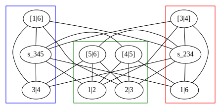

Analytical amplitudes from numerical evaluations
Giuseppe De Laurentis
with Daniel Maitre
QCD@LHC 2019
IPPP - Durham University

Table of Contents
1. Motivation and introduction
2. Singularity structure
3. Ansatz and amplitude reconstruction
4. Some results (Yang-Mills in the Standard Model)
1.1 Motivation
Cross sections at hadron colliders are given by:
$σ_{2 \rightarrow n - 2} = ∑_{a,b} ∫ dx_a dx_b f_{a/h_1}(x_a, μ_F) \, f_{b/h_2}(x_b, μ_F) \;\hat{σ}_{ab→n-2}(μ_F, μ_R)$
$d\hat{σ}_{n}=\frac{1}{2\hat{s}}dΠ_{n-2}\;(2π)^4δ^4\big(∑_{i=1}^n p_i\big)\;|\overline{\mathcal{A}(p_i,μ_F, μ_R)}|^2$
Better predictions require both more loops and higher multiplicity.
| |
|
||||
| 4 | 5 | 6 | 7 | ||
| loops | 0 | 2 | 3 | 4 | 5 |
| 1 | 4 | 5 | 6 | 7 | |
| 2 | 6 | 7 | 8 | 9 | |
Powers of coupling in pure gluon scattering.
Brute force calculations are a mess:

Results are often much easier [1, 2]:
$A^{tree}(1^{+}_{g}2^{+}_{g}3^{+}_{g}4^{-}_{g}5^{-}_{g}) = \frac{i\,⟨45⟩^{4}}{⟨12⟩⟨23⟩⟨34⟩⟨45⟩⟨51⟩}$
1.2 Color Ordering
and
master integrals
Relation to the full amplitude @ tree level:
$\mathcal{A}^{tree}_{n}({p_i, λ_i, a_i}) = \; g^{n-2} ∑_{σ\in S_n/Z_n} \text{Tr}(T^{a_σ(1)}\dots T^{a_σ(n)}) A^{tree}_n(σ(1^{λ_1}),\dots ,σ(n^{λ_n})).$
Color decomposition at one loop:
$\mathcal{A}^{1-loop}_{n}({p_i, λ_i, a_i}) = \; g^{n} ∑_{σ\in S_n/Z_n} N_{c} \text{Tr}(T^{a_σ(1)}\dots T^{a_σ(n)}) A_{n;1}(σ(1^{λ_1}),\dots ,σ(n^{λ_n}))$ $ + ∑_{c = 2}^{\lfloor n/2 \rfloor + 1}∑_{σ\in S_n/Z_{n;c}} \text{Tr}(T^{a_σ(1)}\dots T^{a_σ(c-1)})\text{Tr}(T^{a_σ( c)}\dots T^{a_σ(n)}) A_{n;c}(σ(1^{λ_1}),\dots ,σ(n^{λ_n}))$
Decomposition in terms of basis integrals:
$$A^{1-loop}_{n;1} = \sum_i d_i I^i_{Box} + \sum_i c_i I^i_{Triangle} + \sum_i b_i I^i_{Bubble} + R$$
1.3 Spinor Helicity
The lowest-laying representations of the Lorentz group are:
(Recall: $\mathfrak{so}(1, 3)_\mathbb{C} \sim \mathfrak{su}(2) \times \mathfrak{su}(2)$)
| $\boldsymbol{(j_{-},j_{+})}$ | dim. | name | quantum field | kinematic variable |
|---|---|---|---|---|
| (0,0) | 1 | scalar | $h$ | m |
| (0,1⁄2) | 2 | right-handed Weyl spinor | $\chi_{R\,\alpha}$ | $\lambda_\alpha$ |
| (1⁄2,0) | 2 | left-handed Weyl spinor | $\chi_L^{\,\dot\alpha}$ | $\bar{\lambda}^{\dot\alpha}$ |
| (1⁄2,1⁄2) | 4 | rank-two spinor/four vector | $A^\mu/A^{\dot\alpha\alpha}$ | $P^\mu/P^{\dot\alpha\alpha}$ |
| (1⁄2,0)$\oplus$(0,1⁄2) | 4 | bispinor (Dirac spinor) | $\Psi$ | $u, v$ |
Weyl spinors are sufficient for massless particles:
$\text{det}(P^{\dot\alpha\alpha})=m^2 \rightarrow 0 \quad \Longrightarrow \quad P^{\dot\alpha\alpha} = \bar\lambda^{\dot\alpha}\lambda^\alpha$.
In terms of 4-momentum components we have:
$$ \lambda_\alpha=\begin{pmatrix}\sqrt{p^0+p^3} \\ \frac{p^1+ip^2}{\sqrt{p^0+p^3}}\end{pmatrix} \, , \;\;\; \lambda^\alpha=\epsilon^{\alpha\beta} \lambda_\beta =\begin{pmatrix}\frac{p^1+ip^2}{\sqrt{p^0+p^3}} \\ -\sqrt{p^0+p^3}\end{pmatrix} $$
$\bar\lambda_{\dot\alpha}=\begin{pmatrix}\sqrt{p^0+p^3} \\ \frac{p^1-ip^2}{\sqrt{p^0+p^3}}\end{pmatrix} \, , \;\;\; \bar\lambda^{\dot\alpha}=\epsilon^{\dot\alpha\dot\beta}\bar\lambda_{\dot\beta}=\begin{pmatrix}\frac{p^1-ip^2}{\sqrt{p^0+p^3}} \\ -\sqrt{p^0+p^3}\end{pmatrix}$
$ \bar\lambda_{\dot\alpha} = (\lambda_\alpha)^\dagger \;\;\; if \;\;\; p^i \in \mathbb{R}$
Some definitions:
$$ ⟨ij⟩ = λ_iλ_j = (λ_i)^α(λ_j)_α \quad \quad \quad [ij] = \barλ_i\barλ_j = (\barλ_i)_\dotα(\barλ_j)^\dotα $$
$$ s_{ij} = ⟨ij⟩[ji] $$
$$ ⟨i\;|\;(j+k)\;|\;l] = (λ_i)^α (\not P_j + \not P_k )_{α\dotα} \barλ_l^\dotα $$
$$ ⟨i\;|\;(j+k)\;|\;(l+m)\;|\;n⟩ = (λ_i)^α (\not P_j + \not P_k )_{α \dot α} (\bar{\not P_l} + \bar{\not P_m} )^{\dot α α} (λ_n)_α $$
$$ tr_5(ijkl) = tr(\gamma^5 \not P_i \not P_j \not P_k \not P_l) = [i\,|\,j\,|\,k\,|\,l\,|\,i⟩ - ⟨i\,|\,j\,|\,k\,|\,l\,|\,i] $$
2.1 Singular limits
Singular limits give us information about the poles of the amplitude.
We need a set of possible poles of the amplitudes:
$r_i \in \{ ⟨12⟩, ⟨13⟩, \dots, ⟨1|2+3|4], \dots, s_{123}, \dots \}$,
and let $\mathbb{f}$ be the function we want to reconstruct.
$r_i \rightarrow ε \ll 1, \quad r_{j \neq i} \sim \mathcal{O}(1), \quad \mathbb{f} \rightarrow ε^α \; \Rightarrow \; log(\mathbb{f}) \rightarrow α\cdot log(ε)$
$\Rightarrow$ The slope of $\mathbb{f}(ε)$ in a log-log plot gives us the type of singularity,
if any exists.
As an example, let us consider following amplitude:
$\mathbb{f} = A^{tree}(1^{+}_{g}2^{+}_{g}3^{+}_{g}4^{-}_{g}5^{-}_{g}6^{-}_{g})$
| |
|
Studying the rest of the limits yields the least common denominator for $\mathbb{f}$:
$\mathbb{f} = \frac{\mathcal{N_{LCD}}}{\mathcal{D_{LCD}}} = \frac{\mathcal{N_{LCD}}}{⟨12⟩⟨16⟩[16]⟨23⟩⟨34⟩[34][45][56]s_{234}s_{345}}$.
The complexity of the numerator depends on two parameters:
- mass dimension; $\quad \quad \quad$ 2. little group scalings.
The ansatz has 1326 independent terms.
2.2 Doubly singular limits
Except for the easiest cases, we should really think about $\mathbb{f}$ as:
$\mathbb{f} = \sum_i \frac{\mathcal{N}_i}{\mathcal{D}_i} = \sum_i \frac{\mathcal{N}_i}{\mathcal{R}_i\mathcal{S}_i}$,
where $\mathcal{R}_i$ are products of subsets of $\mathcal{D_{LCD}}$ (i.e. real poles),
and $\mathcal{S}_i$ are products of factors not in $\mathcal{D_{LCD}}$ (i.e. spurious poles).
This information can be accessed by studying doubly singular limits:
$r_i \rightarrow ε \ll 1, \quad r_j \rightarrow ε \ll 1, \quad \mathbb{f} \rightarrow ε^α \; \Rightarrow \; log(\mathbb{f}) \rightarrow α\cdot log(ε)$
Note: now in general we cannot guarantee $\;r_{k \neq i, j} \sim \mathcal{O}(1)$
Information from taking the doubly singular limits:
| ⟨1|2⟩ | ⟨1|6⟩ | [1|6] | ⟨2|3⟩ | ⟨3|4⟩ | [3|4] | [4|5] | [5|6] | s_234 | s_345 | |
|---|---|---|---|---|---|---|---|---|---|---|
| ⟨1|2⟩ | 1 | 1/30 | 1/3 | 1/31 | 1/2 | 2/12 | 2/3 | 2/10 | 1/2 | 2/10 |
| ⟨1|6⟩ | 1/30 | 1 | 1/2 | 1/2 | 1/10 | 2/4 | 2/12 | 1/3 | 2/10 | 2/10 |
| [1|6] | 1/3 | 1/2 | 1 | 2/12 | 2/4 | 1/10 | 1/2 | 1/30 | 2/10 | 2/10 |
| ⟨2|3⟩ | 1/31 | 1/2 | 2/12 | 1 | 1/30 | 1/3 | 2/12 | 2/3 | 2/10 | 1/2 |
| |
||||||||||
The first number if the slope of the log-log plot in the limit,
the second number is the degeneracy of the phase space in the limit.
For instance:
$⟨12⟩, ⟨16⟩ \rightarrow \epsilon \quad \Longrightarrow \quad ⟨26⟩, s_{345}, ⟨2|1+6|5], \dots \rightarrow \epsilon$
The slope in the doubly singular limit tells us whether two poles should be in the same denominator and the degeneracy how to separate them.
| ⟨1|2⟩ | ⟨1|6⟩ | [1|6] | ⟨2|3⟩ | ⟨3|4⟩ | [3|4] | [4|5] | [5|6] | s_234 | s_345 | |
|---|---|---|---|---|---|---|---|---|---|---|
| s_234 | 1/2/2 | 2/10/3 | 2/10/3 | 2/10/3 | 2/10/3 | 2/10/4 | 1/2/2 | 2/10/3 | 1 | 1/2/2 |
Diagramatic representation of relation between poles
Let us briefly consider the coefficient of a three mass triangle:
$\mathcal{D_{LCD}} = ⟨12⟩[12]⟨34⟩[34]⟨56⟩[56]⟨1|3+4|2]^4⟨3|1+2|4]^4⟨5|1+2|6]^4Δ_{135}^3$
| ⟨12⟩ | [12] | ⟨34⟩ | [34] | ⟨56⟩ | [56] | ⟨1|3+4|2] | ⟨3|1+2|4] | ⟨5|1+2|6] | Δ_135 | |
|---|---|---|---|---|---|---|---|---|---|---|
| ⟨1|2⟩ | 1 | 1/2 | 1/2 | 2/12 | 1/2 | 2/12 | 4/4 | 5/6 | 2/10 | 2/4 |
| |
||||||||||
| ⟨3|1+2|4] | 5/6 | 2/10 | 4/4 | 4/4 | 2/10 | 5/6 | 4/2 | 4 | 4/2 | 3.5/4 |
| |
||||||||||
Do we need square roots of momentum invariants?
All branch cuts should have been taken care of by unitarity cuts.
We should be able to explain this without using square roots.
The culprit is $\Delta$, which first appears in the
three mass triangle momentum parametrisation:
$\Delta_{135} = (K_1 \cdot K_2)^2 - K_1^2 K_2^2$
Solution:
In some limits $\Delta$ behaves like the square of some quantity
$(\Omega_{351})^2 \equiv (2s_{12}s_{56}-(s_{12}+s_{56}-s_{45})s_{123})^2 = 4s_{123}^2\Delta_{135}-4s_{12}s_{56}\langle 4|1+2|3]\langle 3|1+2|4]$
$(\Pi_{351})^2 \equiv (s_{123}-s_{124})^2 = 4\Delta_{135}-4\langle 4|1+2|3]\langle 3|1+2|4]$
3.1 Partial fraction decomposition
Going back to our tree level example,
let’s see how we can group together the pols of the amplitude:


3.2 Fitting of ansatz
How big is the ansatz?
Easiest to count at constant null phase weights;
the size of the ansatz is a function of:
1. its mass dimension ($d$) $\quad\quad$ 2. multiplicity of phase space ($m$).
If we allow only for a polynomial in the numerator, then:
$|s_{ij}| = \frac{m(m-3)}{2}$ $\quad\quad$ $|tr_5| = {m-1 \choose 4}$
$\left(\mkern -9mu \binom{\, |s_{ij}| \,}{\, d/2 \,} \mkern -9mu \right) \leq$ ansatz size $\leq \left(\mkern -9mu \binom{\, |s_{ij}| \,}{\, d/2 \,} \mkern -9mu \right) + |tr_5| \left(\mkern -9mu \binom{\, |s_{ij}| \,}{\, (d-4)/2 \,} \mkern -9mu \right)$
4.1 A real application
Let us briefly consider the following quantity:
$R^{1-loop}_6(1^{+}_{g}2^{-}_{g}3^{+}_{g}4^{-}_{g}5^{+}_{g}6^{-}_{g})$
$\mathcal{D_{LCD}} =$ $⟨12⟩[12]⟨13⟩^2⟨15⟩^2⟨16⟩[16]⟨23⟩[23][24]^2[26]^2⟨34⟩[34]⟨35⟩^2⟨45⟩[45][46]^2⟨56⟩[56]$ $⟨1|2+3|1]^2⟨1|5+6|1]^2⟨1|3+4|2]^2⟨1|2+3|6]^2⟨2|1+6|2]^2⟨2|3+4|2]^2$ $⟨3|1+6|2]^2⟨3|1+2|3]^2⟨3|4+5|3]^2⟨3|1+2|4]^2⟨4|2+3|4]^2⟨4|5+6|4]^2$ $⟨5|1+6|4]^2⟨5|1+6|5]^2⟨5|3+4|5]^2⟨5|1+2|6]^2⟨6|1+2|6]^2⟨6|4+5|6]^2$ $s_{123}s_{234}s_{345}Δ_{135}^2Δ_{624}^2$
The mass dimension is now 116,
which would imply an ansatz with size roughly $10^{10}$